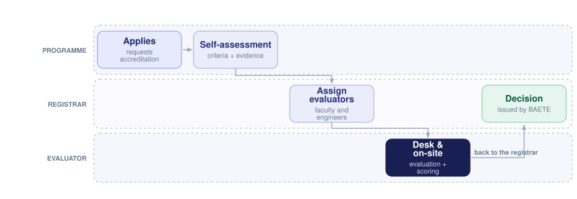

Digitising National Engineering Accreditation
BAETE accredits engineering programmes at every approved institution of higher learning in Bangladesh, and the full accreditation flow is a long chain of submissions, assignments, evaluations and decisions. As lead developer I built the system that automates all of it.

What the system replaces
BAETE — the Board of Accreditation for Engineering and Technical Education — provides accreditation to programmes offered by institutions approved by the UGC or another appropriate government body. That process involves several distinct stages, a lot of document exchange, and coordination between people who are not in the same place. The Accreditation Management System automates all of those processes on one platform.
The three roles
- Admin — the registrar elected from BAETE, who runs the cycle and assigns evaluators.
- Programme — the engineering programmes running at universities across Bangladesh, who submit self-assessment material and evidence.
- Evaluator — faculty members and practising engineers, who score against the accreditation criteria in desk review and on site.
What I built
Beyond the workflow itself, the work covered the parts that decide whether a system like this survives contact with real institutions:
- Database schema design for the accreditation domain — criteria, evidence, assignments and scoring.
- Backend APIs for the submission and review lifecycle.
- Role-based access so each of the three parties sees exactly its own slice.
- Document upload and retrieval across the evidence a self-assessment requires.
- Dashboards and an audit trail, so a decision can be explained after the fact.
Why it mattered
Accreditation decisions affect every graduate of a programme. Making the process traceable — who submitted what, who evaluated it, on what criteria — is as much of the value as the time saved.